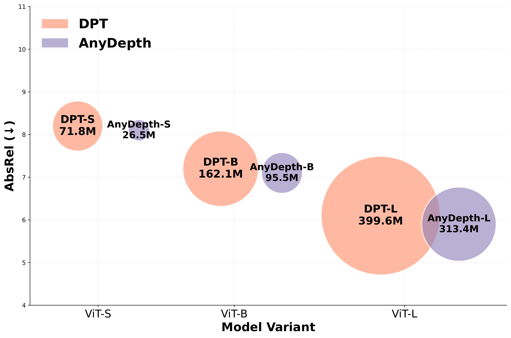
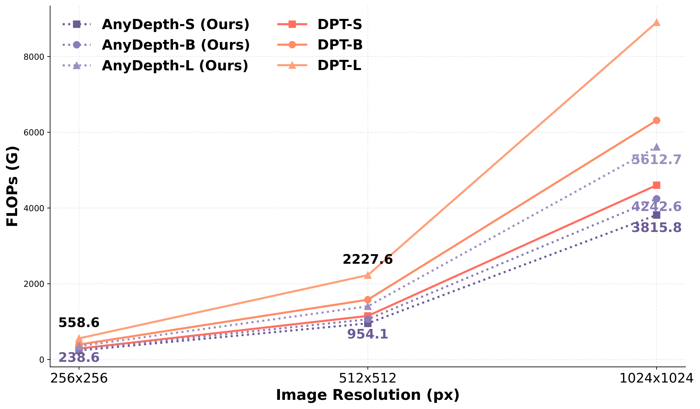
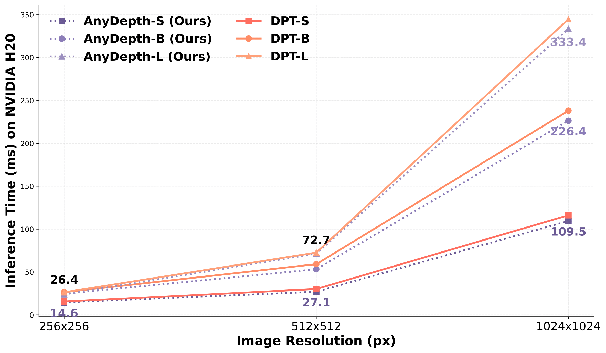
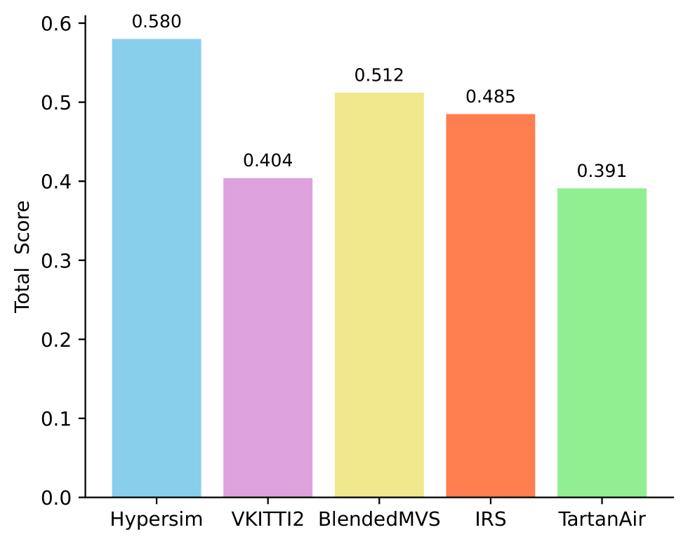
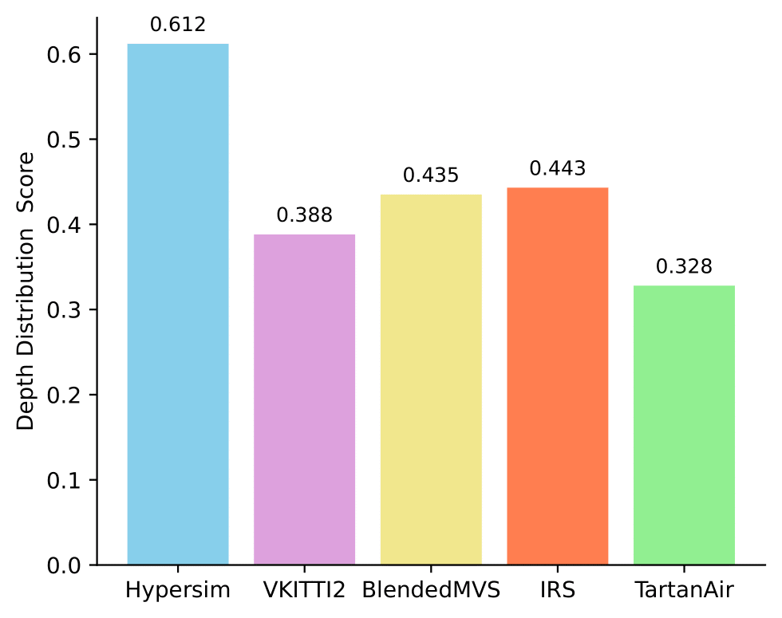
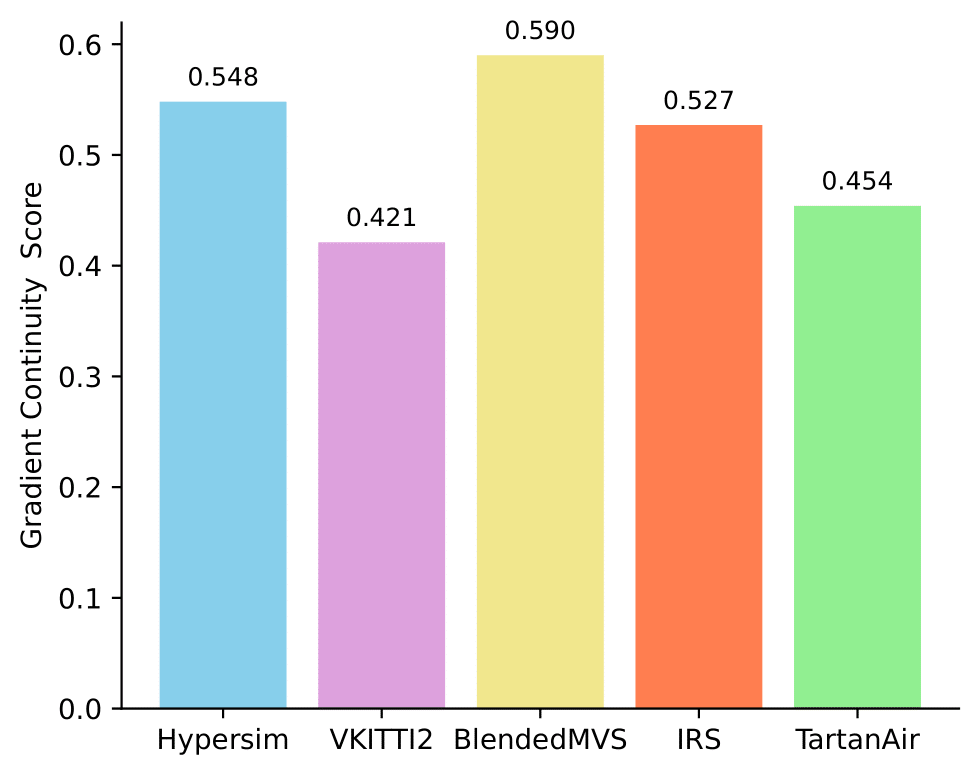

AnyDepth
Depth Estimation Made Easy
1The University of Melbourne 2Peking University 3Shanghai University of Engineering Science
*Equal contribution. †Project lead. ‡Corresponding author.
“Simplicity is prerequisite for reliability.” — Edsger W. Dijkstra
Abstract
TL;DR: We present AnyDepth, a simple and efficient training framework for zero-shot monocular depth estimation, which achieves impressive performance across a variety of indoor and outdoor scenes.
Real World Results
We use the WHEELTEC R550 as the mobile platform for real-world evaluation.
Scene 1
RGB
GT Depth
Depth Anything V2+DPT
Depth Anything V2+SDT (Ours)
Depth Anything V3+DPT
Depth Anything V3+DualDPT
Depth Anything V3+SDT (Ours)
Scene 2
RGB
GT Depth
Depth Anything V2+DPT
Depth Anything V2+SDT (Ours)
Depth Anything V3+DPT
Depth Anything V3+DualDPT
Depth Anything V3+SDT (Ours)
Scene 3
RGB
GT Depth
Depth Anything V2+DPT
Depth Anything V2+SDT (Ours)
Depth Anything V3+DPT
Depth Anything V3+DualDPT
Depth Anything V3+SDT (Ours)
Jetson Orin Nano Latency
Inference latency comparison of SDT and DPT decoders on a Jetson Orin Nano (4GB).
| Resolution | Decoder | Latency (ms)↓ | FPS↑ |
|---|---|---|---|
| 256×256 | DPT | 305.65 | 3.3 |
| SDT (Ours) | 213.35 | 4.7 | |
| 512×512 | DPT | 1107.64 | 0.9 |
| SDT (Ours) | 831.48 | 1.2 |
Jetson Orin Nano Memory
Peak GPU memory usage during inference at 256×256 resolution on Jetson Orin Nano (4GB).
| Decoder | Peak Memory (MB)↓ |
|---|---|
| DPT | 589.5 |
| SDT (Ours) | 395.2 |
Method
Overview
AnyDepth architecture overview. The input image is encoded into tokens by a frozen DINOv3 backbone network, then decoded by our lightweight SDT decoder. Tokens undergo only a single projection and weighted fusion. The Spatial Detail Enhancer (SDE) module ensures finer-grained predictions. The feature map is upsampled by an efficient and learnable upsampler dysample, and the depth is finally output by the head.
Simple Depth Transformer (SDT)
Our decoder adopts a simple single-path fusion and reconstruction strategy, aiming to take advantage of the high-resolution feature of DINOv3 and further unleash its performance at high resolution. We first project the tokens extracted from the encoder into a 256-dimensional space using a linear layer followed by a GELU non-linearity, which preserves sufficient informative content while substantially reducing the computational overhead in the subsequent decoding stages. For the class token, we keep the same processing as DPT, concatenate it with the spatial token, and then fuse it through the learnable projection.
SDT vs. DPT
A key difference between SDT and DPT is the order of feature reassembly. DPT employs a reassemble-fusion strategy. Specifically, DPT first applies the reassemble module to the tokens extracted by each Transformer layer, mapping the tokens to feature maps of different scales. These feature maps are then fused in a cascade across scales, which inevitably introduces multiple branches and repeated cross-scale alignment overhead. In contrast, SDT employs a fusion-reassemble strategy, directly projecting and fusing groups of tokens. Only after this stage do we perform spatial reassembly and upsampling along a single path. This fusion-reassemble strategy avoids the high cost of per-layer token reassembly and feature map cross-scale alignment, making it more efficient and stable, especially when processing high-resolution inputs.
Efficiency
(a) Model Comparison
(b) FLOPs Comparison
(c) Inference Time Comparison
Comparison of the number of parameters (left), computational complexity (mid), and Inference time (right) of AnyDepth and DPT for different model sizes and input resolutions. Our method significantly reduces the number of model parameters and computational cost while maintaining competitive accuracy. Moreover, our method consistently achieves lower latency, especially at higher resolutions.
Visualization


Qualitative results of zero-shot monocular depth estimation using AnyDepth of ViT-B and comparison with DPT-B.
Image to 3D Point Cloud

Point cloud quality comparison. Point clouds generated using SDT have more regular geometry and lower noise compared to those generated by other methods.
Dataset Quality
(a) Total Score
(b) Depth Distribution Score
(c) Gradient Continuity Score
Dataset quality across the Total Score, Depth Distribution Score, and Gradient Continuity Score (higher is better).
Experimental Results
Quantitative Comparison of Zero-shot Affine-invariant Depth Estimation
Quantitative comparison of zero-shot affine-invariant depth estimation. Lower AbsRel values are better; higher δ1 values are better. DINOv3 uses the ViT-7B encoder, and Depth Anything v2 (DAv2) is trained on 62.6M datasets. For fair comparison, the baseline (DPT) uses a frozen DINOv3 encoder and DPT head, while our method replaces the DPT head with the proposed SDT. The bold numbers in the table refer to the best results between DPT and AnyDepth.
| Method | Training Data↓ | Encoder | #Params (M)↓ | NYUv2 | KITTI | ETH3D | ScanNet | DIODE | |||||
|---|---|---|---|---|---|---|---|---|---|---|---|---|---|
| AbsRel↓ | δ1↑ | AbsRel↓ | δ1↑ | AbsRel↓ | δ1↑ | AbsRel↓ | δ1↑ | AbsRel↓ | δ1↑ | ||||
| DINOv3 | 595K | ViT-7B | 91.19 | 4.3 | 98.0 | 7.3 | 96.7 | 5.4 | 97.5 | 4.4 | 98.1 | 25.6 | 82.2 |
| DAv2 | 62.6M | ViT-S | 71.8 | 5.3 | 97.3 | 7.8 | 93.6 | 14.2 | 85.1 | -- | -- | 7.3 | 94.2 |
| ViT-B | 162.1 | 4.9 | 97.6 | 7.8 | 93.9 | 13.7 | 85.8 | -- | -- | 6.8 | 95.0 | ||
| ViT-L | 399.6 | 4.5 | 97.9 | 7.4 | 94.6 | 13.1 | 86.5 | -- | -- | 6.6 | 95.2 | ||
| DPT | 584K | ViT-S | 71.8 | 8.4 | 93.3 | 10.8 | 89.1 | 12.7 | 92.0 | 8.3 | 93.5 | 26.0 | 71.4 |
| ViT-B | 162.1 | 7.5 | 95.1 | 10.8 | 88.9 | 10.0 | 92.9 | 7.1 | 95.3 | 24.5 | 73.4 | ||
| ViT-L | 399.6 | 6.1 | 96.8 | 8.9 | 92.5 | 13.0 | 94.9 | 6.0 | 97.0 | 23.4 | 73.9 | ||
| AnyDepth | 369K | ViT-S | 26.5 | 8.2 | 93.2 | 10.2 | 88.3 | 8.4 | 93.5 | 8.0 | 93.6 | 24.7 | 71.4 |
| ViT-B | 95.5 | 7.2 | 95.0 | 9.7 | 90.1 | 8.0 | 94.5 | 6.8 | 95.6 | 23.6 | 72.7 | ||
| ViT-L | 313.4 | 6.0 | 96.8 | 8.6 | 92.6 | 9.6 | 95.4 | 5.4 | 97.4 | 22.6 | 73.6 | ||
Quantitative Comparison of Zero-shot Affine-invariant Depth (Encoders & Decoders)
Quantitative comparison of zero-shot affine-invariant depth estimation with different encoders and decoders. Lower AbsRel values indicate better performance, while higher δ1 values are better. We use ViT-B as the encoder for DAv2, ViT-L for DAv3, and VGGT-1B for VGGT. The encoder used pre-trained weights, and the decoder was randomly initialized. Bold numbers denote the better result.
| Method | Encoder | Decoder | NYUv2 | KITTI | ETH3D | ScanNet | DIODE | |||||
|---|---|---|---|---|---|---|---|---|---|---|---|---|
| AbsRel↓ | δ1↑ | AbsRel↓ | δ1↑ | AbsRel↓ | δ1↑ | AbsRel↓ | δ1↑ | AbsRel↓ | δ1↑ | |||
| DAv2 | ViT-B | DPT | 5.8 | 96.2 | 10.4 | 89.1 | 8.8 | 94.6 | 6.2 | 95.3 | 23.4 | 73.8 |
| SDT | 5.6 | 96.4 | 10.7 | 89.6 | 7.5 | 95.8 | 6.1 | 95.4 | 23.9 | 73.9 | ||
| DAv3 | ViT-L | DPT | 4.9 | 96.9 | 8.8 | 92.4 | 6.9 | 95.9 | 5.0 | 96.6 | 22.5 | 74.6 |
| Dual-DPT | 4.9 | 97.0 | 8.9 | 92.4 | 7.0 | 95.8 | 4.9 | 96.6 | 22.3 | 74.6 | ||
| SDT | 4.9 | 97.1 | 8.9 | 92.4 | 5.8 | 96.6 | 5.0 | 96.6 | 21.9 | 74.9 | ||
| VGGT | VGGT-1B | DPT | 4.8 | 97.7 | 15.6 | 77.9 | 7.2 | 94.7 | 4.6 | 97.6 | 30.7 | 76.2 |
| SDT | 4.8 | 98.0 | 15.5 | 80.1 | 7.0 | 95.1 | 4.6 | 98.0 | 30.6 | 76.8 | ||
Multi-resolution Efficiency
Multi-resolution efficiency comparison of SDT and DPT heads under a ViT-L encoder. Latency is averaged over 1000 runs on an NVIDIA H100 GPU. Lower is better.
| Resolution | Decoder | FLOPs (G)↓ | Latency (ms)↓ |
|---|---|---|---|
| 256×256 | DPT | 444.14 | 6.66 ± 0.22 |
| SDT (Ours) | 234.17 | 6.10 ± 0.33 | |
| 512×512 | DPT | 1776.56 | 24.65 ± 0.22 |
| SDT (Ours) | 936.70 | 23.17 ± 0.54 | |
| 1024×1024 | DPT | 7106.22 | 99.79 ± 0.79 |
| SDT (Ours) | 3746.79 | 93.09 ± 0.51 |
Decoder Parameters
Decoder parameter comparison across different ViT backbones. Lower is better.
| Decoder | ViT Backbone | Params (M)↓ |
|---|---|---|
| DPT | ViT-S | 50.83 |
| ViT-B | 76.05 | |
| ViT-L | 99.58 | |
| SDT | ViT-S | 5.51 |
| ViT-B | 9.45 | |
| ViT-L | 13.38 |